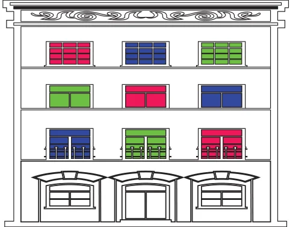
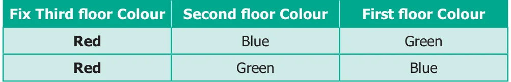
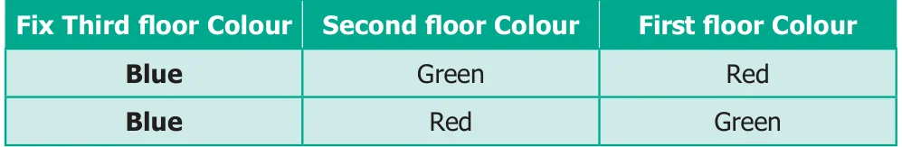
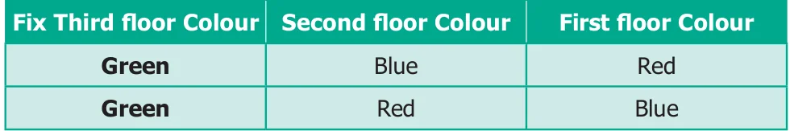

There are two shorts and three shirts. In how many different combinations can you wear them?
At a time you are going to pick one of the shorts and different shirts. We denote the shorts as A and B, and the shirts as p, q and r. Then you can wear one of these: A p, A q, A r, B p, B q and B r.
Thus you have six different combinations and you know that you have counted all the possibilities. This is systematic listing.
Situation 1
Your friend has built a house with three floors. He wants to paint each floor with three different colours red, blue and green. Can you help him to find different ways of possible colour combinations to paint the home?

In how many ways can his house be painted with these three colours?
Let us consider the floors as the Third floor, the Second floor and the First floor. We can say that
the painting can be done as RBG, BRG, GRB…etc. But here it is possible that we may miss out some patterns of colours. So, we can use systematic listing as given below.
Step 1: Fix one colour; try the possible arrangements with other colours. For example, if the Third floor is fixed as Red, then we get 2 ways which is shown in the table below.

Step 2: If the Third floor is fixed as Blue, then we get another 2 ways which is shown in the table below.

Step 3: If the Third floor is fixed as Green, then we get 2 more ways which is shown in the table below.

Hence, we get 6 different ways of painting the three floors, which are R-B-G, R-G-B, B-G-R, B-R-G, G-B-R and G-R-B.
Situation 2
Suppose you want to write four digit numbers by using the digits 3, 6, 9 and 5. What are the possible numbers you can write using each digit exactly once? If you list randomly, for example 9365, 3695, 5639 and so on, you may not write all the possibilities. So, write in ascending order.
- ●All numbers beginning with 3:
Fix next digit and change the other 2 digits. We get, 3569, 3596, 3659, 3695, 3956, 3965. Similarly,
- ●All numbers beginning with 5 : 5369, 5396, 5639, 5693, 5936, 5963
- ●All numbers beginning with 6 : 6359, 6395, 6539, 6593, 6935, 6953
- ●All numbers beginning with 9 : 9356, 9365, 9536, 9563, 9635, 9653
Totally, we can have \(6+6+6+6 = 24\) numbers
TRY THESE
Mother had a lot of wooden pieces in different shapes with her. She gave 6 triangles to Kannagi and 6 circles to Madhan and asked them to create different figures using them. They tried and got some interesting figures. Can you create figures like them that are nice and interesting? Space for new figures
1)
- 1)1
- 2)4 5 6
- 2)2
- 3)1 3
- 4)6 4
Fig.6.7